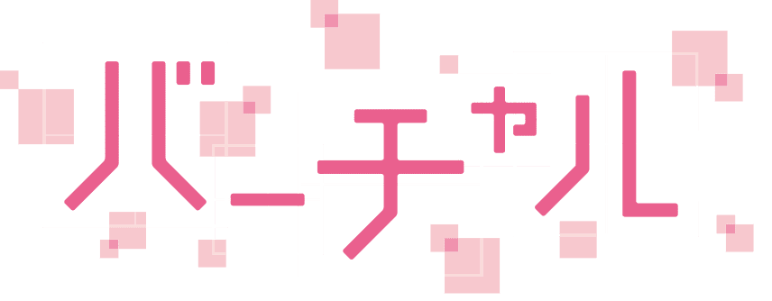
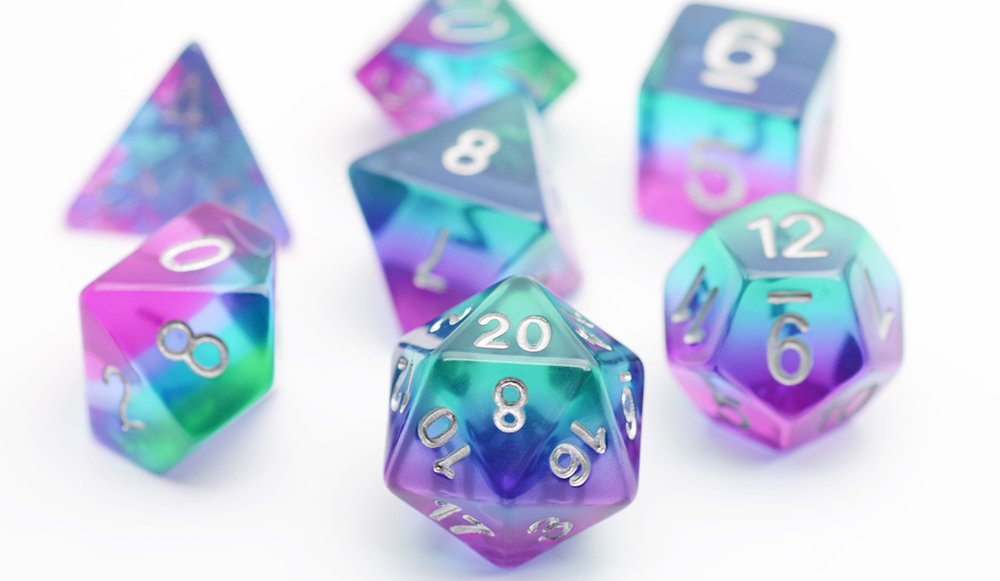
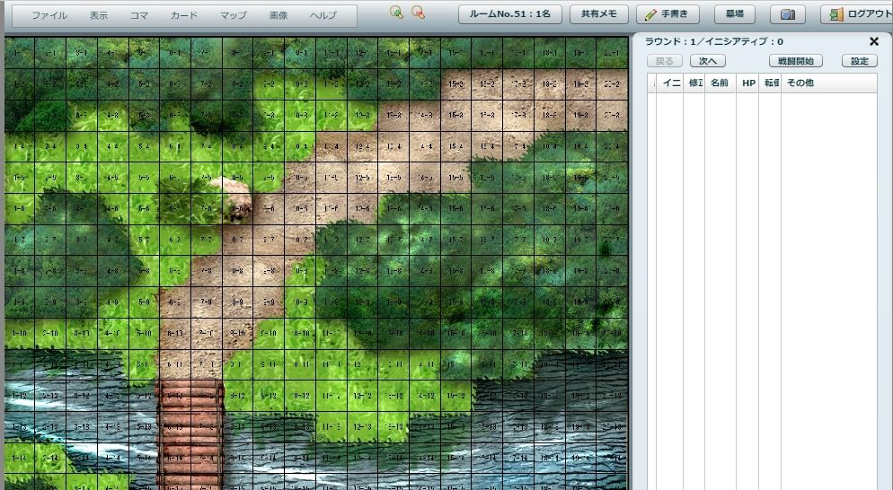
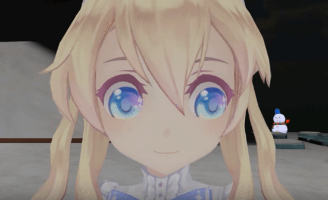
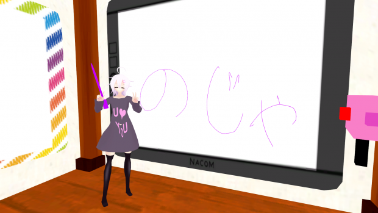

Vオンセのススメ
はじめに
TRPGがしたい！
でも日程が合わない！集まれない…
そんなあなたに贈る、
オンセに代わるもう1つの提案。
それが、
バーチャルオンセ！
(以下Vオンセ)
用語の確認
〜最初に確認しておこう〜
- オフセ
- オフラインセッション
みんなで集まって顔を合わせて楽しむ形式
- オンセ
- オンラインセッション
チャット(ボイス、テキスト)が主な意思疎通手段
進行補助ツールを使って楽しむのが一般的
- Vオンセ
- 今回提唱する新しいオンセの形態
バーチャル空間 で意思疎通を図る
進行補助ツールを 使用しない

いきなりだけど
オフセ最高だよね！
〜オンセの抱える問題点〜
オフセの楽しさ①
密なコミュニケーション
- 空気感
- テンポのよい会話
視線の交わし合い
オフセの楽しさ②
アナログ感
- ダイスロール
- 「自分の運で制御が効きそう」な感覚
能動的 → シナリオへの没入感！
- キャラクターシート
- 基本手書き
パラメータ増減も手書き
キャラクターへの愛着
やっぱオフセって最高！
じゃあオンセはどうなの？

オンセの利点
ツールを使うよ
- 作業効率化
- キャラクターステータスの自動的な管理
ワンクリックのダイスロール
出目に基づく成否の自動判定
- 画面、マップ共有
- 全プレイヤーで同一の画像を共有
進行上重要な情報にのみフォーカスできる
オンセだと色々効率化できるね！

…でもその効率化、本当に利点？
潜在的なオンセの問題
- チャットベースの世界で生じる「ラグ」
- 音声または文字のみのやり取り
誰が発言してるのか分からない！（口の動き）
誰に発言してるのか分からない！（視線の動き）
- 互いの姿が見えない
- ハンドアウトが受け取れない！
ホワイトボードへの図示や指示が見られない！
（進行に時間がかかりすぎる！ゲームにならない）
さっきの利点、実は…
ゲームをどうにか成り立たせるための努力
- 作業を効率化して少しでもテンポを良くする！
- → でも、アナログの良さは消える…
ダイス振りたいナリィ…
- 画面を共有する！
- → ハンドアウトやホワイトボードの 代わり
映像による演出ができれば利点だが高コスト
利点というより 欠点解消 の試み
つまりオンセは オフセの不完全な代替 ！(頑張ってるけど)
やっぱりオフセ最高だよね！
少しでもオフセに近づく方法は無いのだろうか…？
そこで
Vオンセ
Vオンセって結局なんなの？
- コミュニケーション、情報共有
- → バーチャル空間上で行います
→ VRChat を使います
- ゲームプレイ
- → 各自のリアルの卓上で行います
レッツバーチャル空間
〜 仮想世界でコミュニケーション！ 〜
VRChat
- VRChatとは？
- 3Dアバターになって動き回れるソフト
Chatに留まらずとにかく色んなことができる
密なコミュニケーション
- 視線の動きが分かる
- 画面で見ている方向 = キャラの視線の向き
他キャラから視線の動きが分かる
- 口元の動きが分かる
- リップシンク
音声を拾ってアバターの口が動く
百聞は一見に如かず
色んな機能でわちゃわちゃ交流している様子

リップシンク

疑似プレゼンテーションも可
- VR空間上にパネルを配置
- PC画面をVR空間のオブジェクトに投影
ペンがあるワールドならお絵描きも可！
（要VR用コントローラ）

つまり、
従来型オンセの問題がほぼ解消できる！
レッツ
バーチャルコミュニケーション
in
VRChat
…ところでダイスはどこで振るの？
プレイ
現実世界で行う
- ダイス：机の上で振りましょう
- あなたのPCが乗ってる机、そこです
ダイスは各人に事前配布
出目は周囲から見えないので宣言しましょう
- キャラシ：ペンと紙でガリガリ
- いつも通り紙に書きましょう
プレイは普段通りで、バーチャルに交流しよう！
バーチャルオンセまとめ
- より現実に近いプレイができるよ！
- 顔見て話せるよ！（アバターだけど）
- アナログなプレイができるよ！（ここは現実）
通常のオンセよりもオフセに近い感覚
でも、お高いんでしょう？
VR機器でプレイする 場合
- オタク特有のハイエンドPC（たかい）
- オタク特有のハイエンドGPU（たかい）
- ヘッドマウントディスプレイ（たかい）
やっぱり高いじゃないか！（呆れ）
VR機器が無くても、できまぁす！
普通に画面でプレイする 場合
- 平凡なPC（ノートでも動く…らしい）
- マウス（視点を動かせます）
- マイク（流石に必要です）
手持ちのPCで動くので 追加投資は不要！ （多分）
まとめるよ
まとめ
- やっぱりオフセが志向！
- オンセ（ツール）は頑張ってるけどおしい
- バーチャルオンセ は オフセに近い体験ができる！
- 追加投資（多分）なし！
はよう美少女アバターまみれになろうや
以上
参考
TRPGオンセ用アプリ有名のどころも
一応調査したので参考までに掲載
どどんとふ
- おそらく一番有名
- Flashを使用
- 2020年のFlash終了を受け、サービス終了予定
Quoridorn
- どどんとふ終了を受けて開発された後継ツール
- 2019年5月に公式サイトオープン
- どどんとふと似た使い勝手を意識
- オープンソースなのでプルリク送れるよ
ユドナリウム
- 2017年頃から開発？
- 3Dのリッチな操作画面
- P2Pのためサーバー負荷とは無縁
- オープンソースなのでプルリク送れるよ